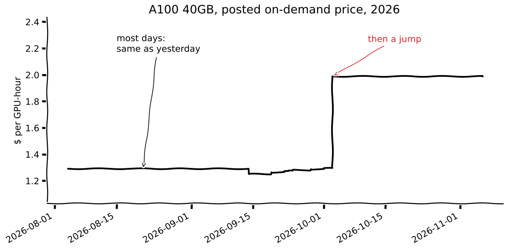
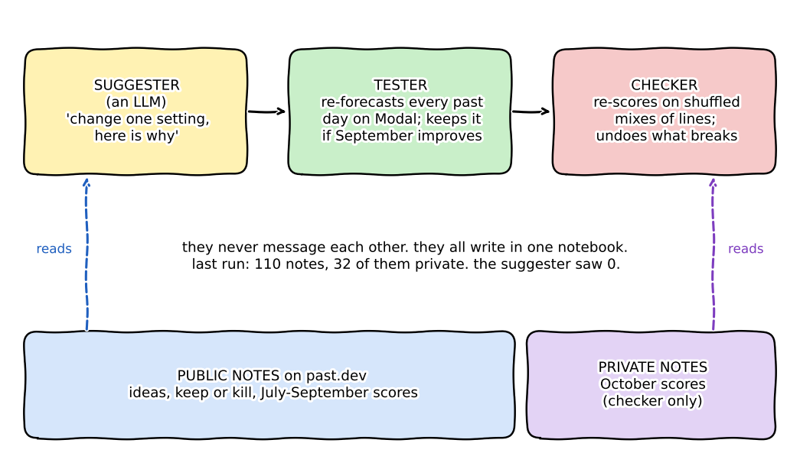
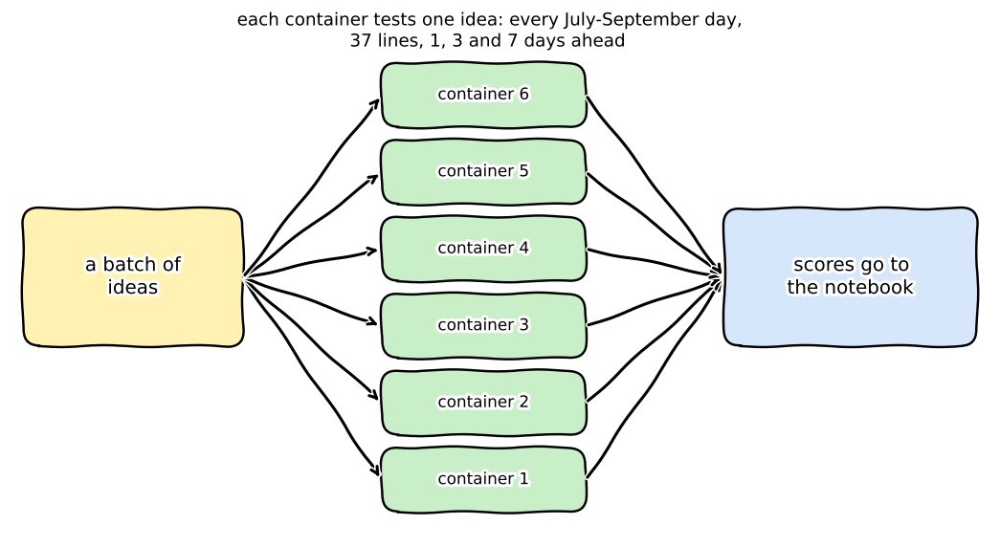
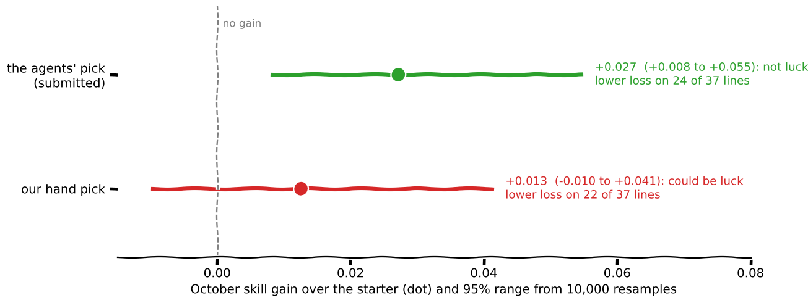
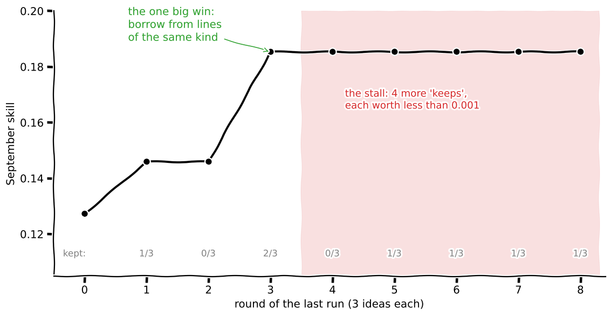

Pacific track, SF AI Research Hackathon, 14–15 Nov 2026
Every claim is checked, even the failures.
Memory on past.dev. Backtests on Modal.
Lenders, lessors and buyers of reserved GPU capacity need to know how far a rental price can move.

Posted prices move in steps, so “tomorrow = today” is very hard to beat. We forecast the 10%, 50% and 90% levels, 1, 3 and 7 days ahead.

The suggester is an LLM (gpt-5-mini). The tester and the checker are code. Each round tries 3 ideas.
0 of 32
private October notes reached the suggester in the last run.
Every idea, verdict and score is a dated note. A new round starts by reading what was tried.
October is the test month. Its scores go in private notes that only the checker can read.
The suggester reads notes dated up to September 30. The past.dev server applies both cuts, and a live test checks them.
All three agents share one key. The wall stops honest code; it would not stop an agent that lies about who it is.

About 100,000 forecast steps an hour once warm. Modal cost under $0.03 for all runs; with the suggester LLM, under $0.10. The Claude agent sessions that built it are separate.
So the loop can afford a real search: 8 rounds, 24 ideas, each scored on every July–September day.
+0.149
October skill on the 37 scored lines, against +0.122 for the starter.
Each line also learns from how lines of the same kind repriced: all neocloud rate cards, say. The loop found this in round 3.
Its 10–90% band held the true price 71% of the time; the target is 80%.

The luck check resamples the 37 lines 10,000 times. The agents' pick beats the starter in this check; our hand pick does not.

The loop stalled turning the same settings. So in v8, three AI researchers rewrite the forecaster's code, and a director rewrites their strategy every hour.
The scorer is locked and hash-checked. They can change how they search, never how they are judged. The test month stays hidden and scores only the final version.
cd loop && uv sync --group pack && ./reproduce.sh <data pack dir>
It rebuilds the series, the backtest scores and the submitted forecasts from the public data pack.
Every agent session is logged. The cleaned logs come with this submission.
Code, results and write-up: github.com/swappysh/gpu-scientist (docs/FINDINGS.md)
Thank you.